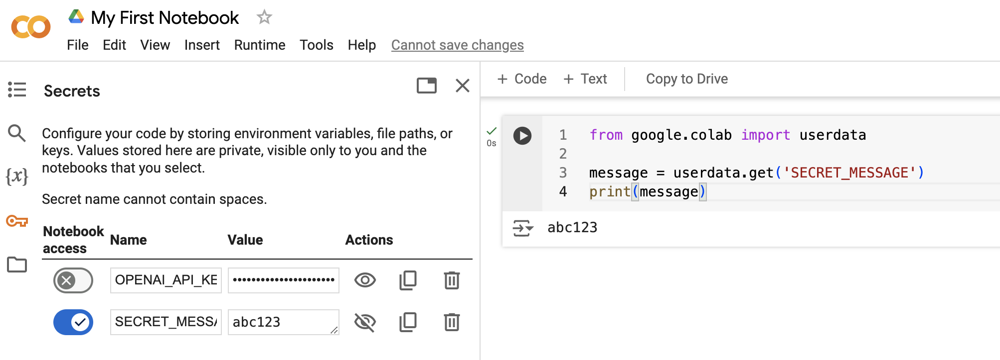

Notebook Secrets in Google Colab
The “Secrets” menu in the Google Colab left sidebar allows the developer to save secret credentials, configuration variables, and other sensitive user data that our notebooks may require.
Notebook secrets allow developers to customize the environment in which an application is operating, by passing certain values at runtime. This allows the program to behave differently, depending on what values have been specified.
Notebook secrets are like an indirect way of providing inputs to a program, without hard-coding them in the program, and without asking for a manual user input.
Motivations
Notebook secrets provide benefits in terms of security and customization, and can help enable process automation.
We avoid hard-coding the secret variables in the code for customization and security reasons - so two people can share and manage a single code base without exposing their secret passwords.
For Security
Sometimes applications need to use secret passwords, tokens, and other credentials to interface with external services and APIs. This is especially the case when the app is authenticating to a third-party service on behalf of a given user. For example, consider an application that automatically logs in to a user’s email inbox to check for unread messages.
Hard-coding secret credentials like email passwords into the program’s source code (in this case in the notebook) would be irresponsible from a security standpoint, especially when sharing the source code with other developers as well as online. We want to avoid exposing secret passwords to prevent unauthorized access to our accounts.
So to keep the secret credentials separate from the source code, we can pass them to the program as notebook secrets. This way, the program’s code only contains a reference to these variables, but not their values.
For Configuration and Collaboration
Notebook secrets allow multiple developers to share the same notebook, without keeping their own slightly different copies.
Consider the case of two developers using the same program to download their own respective social media posts. This requires them to specify their own respective credentials (most likely in the form of API keys).
If each developer hard-coded their own credentials into the application’s source code, it would require them to keep two slightly different versions of the source code. This would lead to to increased maintenance costs, complexities, and inefficiencies.
Instead, by passing their own notebook secrets at runtime, multiple developers can share the same source code. This is a much more maintainable and efficient solution than keeping separate copies. And allows many developers to share the same source code.
Implementation
Notebook secrets are first set using the secrets sidebar menu, providing a name for the secret variable in all capital letters (for example SECRET_MESSAGE), and a corresponding value (without quotes or spaces).

Then the secret values are accessed within the notebook using the userdata dictionary from the google.colab sub-module. In this example, we are storing the value of the notebook secret called SECRET_MESSAGE in a Python variable called message, and then doing something with that Python variable later (in this case printing it, but you will most likely avoid printing secret credentials in practice):
from google.colab import userdata
message = userdata.get('SECRET_MESSAGE')
print(message)